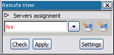
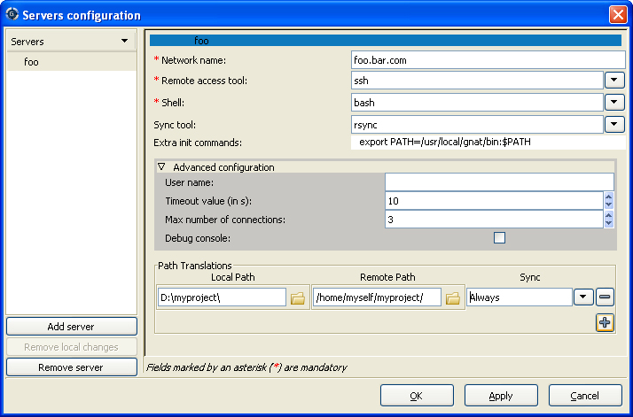
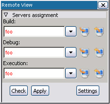

14. Using GPS for Remote Development¶
It is common for programmers in a networked environment to use a desktop computer that is not itself suitable for their development tasks. For example, each developer may have a desktop PC running Windows or GNU/Linux as their access to a company network and do all their development work on shared networked servers. These remote servers may be running an operating system different from the one on their desktop machine.
One common way of operating in such an environment is to access the server through a remote windowing system such as X Window System. GPS can be used in such way, but it is not necessarily the most efficient configuration because running GPS remotely on a shared server increases the workload of the server as well as traffic on the network. When the network is slow, user interactions can become uncomfortably sluggish. This is unfortunate because the desktop used to access the network is often a powerful PC that remains idle most of the time. To address this situation, GPS offers the option of running natively on the desktop, with compilation, execution, and/or debugging activities performed transparently on one or more remote servers.
14.1. Requirements¶
In order to compile, run, or debug on a host remote from GPS, your configuration must meet the following conditions:
- Have a remote connection to the host using rsh, ssh, or telnet. GPS can handle passwords for such connections.
- Have either a Network Filesystem (i.e. NFS, SMB, or equivalent) sharing the project files between the host and the target or have rsync installed on both client and server. (rsync can be found at http://www.samba.org/rsync/ for Unix, and is part of Cygwin under Windows: http://www.cygwin.com.
- Either subprojects must be ‘withed’ by the main project using relative paths or the absolute paths must be the same on both the desktop and the server.
You perform the full remote development setup in two steps:
- Setup the remote servers configuration.
- Setup a remote project.
14.2. Setup the remote servers¶
14.2.1. The remote configuration dialog¶
Open the remote configuration dialog using the View->Remote menu to configure remote servers. You can also set a predefined configuration when installing GPS by using XML files. (See Defining a remote server, and Defining a remote path translation, for more information.)
Once you have opened the Remote view, click on Settings to open the servers configuration dialog.
This dialog consists of two parts:
- The left part dialog contains the list of configured servers, each identified by a nickname. Three buttons allow you to create, reinitialize, or delete a server.
- The right part contains the selected server’s configuration.
To set up a remote server, first create a new server by clicking on the Add Server button on the bottom left of the dialog. Enter a unique nickname identifying the server (not necessarily the network name of the server). This server is automatically selected and the right part of the dialog shows its configuration, which is initially mostly empty.
14.2.2. Connection settings¶
For each server, you first need to complete the section describing how GPS should connect to that server. All mandatory fields are identified by an asterisk:
Network Name
The name used to connect to the server via your network. It can be either an IP address, a host name on your local network, or a fully qualified name with domain.
Remote Access Tool
A drop-down list specifying the tool used to connect to the server. GPS contains built in support for the following tools
- ssh
- rsh
- telnet
- plink (Windows tool) in ssh, rsh, or telnet mode
See Defining a remote connection tool if you need to add a different tool. If a tool is not in your path (for example, because it is not installed), it won’t appear in the tools list. Some tools incompatible with GPS are not displayed either, such as the Microsoft telnet client.
Shell
Which shell runs on the remote server. GPS supports the following Unix shells:
- sh
- bash
- csh
- tcsh
GPS also support the Windows shell (
cmd.exe). See Limitations, for Cygwin’s shell usage on Windows: it is preferable to usecmd.exeas a remote shell on Windows servers.
You may need to specify other fields, but they are not mandatory. Most are accessible through the advanced configuration pane.
- The Remote Sync Tool is used to synchronize remote and local filesystems, if these are not shared filesystems. Only rsync is supported by GPS.
- The Extra Init Commands lists initialization commands that GPS sends to the server when it connects to the remote machine, the chosen shell is launched, and your default initialization files are read (i.e. .bashrc file for the bash shell). GPS sends these extra commands, allowing you to, for example, specify a compilation toolchain.
- The User Name specifies the name used to connect to the server. The default is your current login name on your local machine.
- The Timeout value determines when a connection to a remote host is considered dead. All elementary operations performed on the remote host (i.e., those operations that normally complete almost immediately) use this timeout value. The default is 10 seconds. If you have a very slow network connection or a very overloaded server, set this to a higher value.
- The Maximum Number of Connections is the maximum number of simultaneous connections GPS is allowed to make to this server. If you want to compile, debug, and execute at the same time on the machine, GPS needs more than one connection to do this. The default is 3.
- Depending on the kind of server and the remote access tool used, commands sent to the server may require a specific line terminator, typically either the LF character or CR/LF characters. Usually GPS can automatically detect which is needed (the ‘auto’ mode), but you can force the choice to CR/LF (cr/lf handling set to ‘on’) or LF (cr/lf handling set to ‘off’).
- The Debug Console allows you to easily debug a remote connection. If checked, it opens a console displaying all exchanges between GPS and the selected server.
14.2.3. Path settings¶
The final section of the configuration defines the path translations between your local host and the remote server.
The remote path definitions allow GPS to translate your locally loaded project (that resides in your local filesystem) to paths used on the remote server. This section also tells GPS how to keep those paths synchronized between the local machine and the remote server.
All your project’s dependencies must reside in a path defined here. You retrieve those paths by using gnat list -v -Pyour_project. To add a new path, click on the + button and enter the corresponding local and remote paths.
You can easily select the desired paths by clicking on the icon next to the path’s entry. Remote browsing is allowed only when the connection configuration is set (see Connection settings.) Clicking on Apply applies your connection configuration and allows you to browse the remote host to select the remote paths.
You can set one of five types of path synchronization for each path:
- Never: no synchronization is required from GPS because the paths are shared using an OS mechanism like NFS.
- Manually: synchronization is needed, but is only performed manually using the remote view buttons.
- Always: Relevant to source and object paths of your project. They are kept synchronized by GPS before and after every remote action (such as performing a build or run).
- Once to local/Once to remote: Relevant to project’s dependencies. They are synchronized once when a remote project is loaded or when a local project is set remote. They can still be manually synchronized using the Remote View (The remote view.)
The way those paths need to be configured depends on your network architecture:
- If your project is on a filesystem shared between your host and the remote host (using NFS or SMB filesystems, for example), only the roots of those filesystems need to be specified, using each server’s native paths (on Windows, the paths are specified using the “X:\my\mounted\directory\” syntax and on Unix, using the “/mnt/path/” syntax).
- If the project’s files are synchronized using rsync, defining a too generic path translation leads to very slow synchronization. In that is the case, define the paths as specifically as possible in order to speed up the synchronization process.
Note that navigation to entities of the run-time is not supported in remote mode.
14.3. Setup a remote project¶
14.3.1. Remote operations¶
GPS defines four different categories of remote operation and corresponding servers: Build operations, Debug operations, Execution operations and Tools operations. All compiler-related operations are performed on the Build_Server. The Tools_Server is explained below. The debugger runs on the Debug_Server and the project’s resulting programs run on the Execution_Server. The GPS_Server (the local machine) is used for all other operations. These “servers” may not (and are often not) different machines.
The Tools_Server handles all compiler related operations that do not depend on a specific compiler version. It is used in dual compilation mode, for example, to determine whether the action can be safely run using a very recent compiler toolchain (which the Tools_Server runs), or whether a specific, older baseline compiler version must be used.
If the remote mode is activated and the dual compilation mode is not, all Tools_Server operations are executed on the Build_Server. Otherwise, if the dual compilation mode is activated, all Tools_Server operations are always executed on the local machine.
14.3.2. The remote view¶
Use the Remote view (View->Remote) to assign servers to categories of operations for the currently loaded project. You can assign a different server to each operation category if you fully expand the Servers Assignment tab. Alternatively, assign all categories to a single server in one step if the you have left the Servers Assignment tab collapsed.
When you select a server for a particular category, the change is not immediately effective, as indicated by the server’s name appearing in red. This allows you to check the configuration before applying it, by pressing the Check button. This button tests for a correct remote connection and verifies that the project path exists on the build server and has an equivalent on the local machine.
Clicking the Apply button performs the following actions:
- Reads the default project paths on the Build_Server and translates them into local paths.
- Synchronizes those paths marked as Sync Always or Once to local from the build server.
- Loads the translated local project.
- Assigns the Build, Execution and Debug servers.
If one of those operations fails, GPS reports the errors in the Messages view and retains the previous project settings. Once a remote server is assigned, the remote configuration is automatically loaded each time the project is loaded.
Use the two buttons on the right of each server to manually perform a synchronization from the server to your local machine (left button) or from your local machine to the server (right button).
14.3.3. Loading a remote project¶
If the project you want to use is already on a remote server, you can directly load it on your local GPS by using the menu and selecting the server’s nickname. This shows you its file tree. Navigate to your project and select it. The project is loaded as described above with all remote operations categories assigned to the selected server by default.
You can reload your project from local files on your machine. The remote configuration is automatically reapplied.
14.4. Limitations¶
The GPS remote mode imposes some limitations:
Execution: you cannot use an external terminal to remotely execute your application. The Use external terminal checkbox of the run dialog has no effect if the program is run remotely.
Debugging: you cannot use a separate execution window. The Use separate execution window option is ignored for remote debugging sessions.
Cygwin on remote host: the GNAT compilation toolchain does not understand Cygwin’s mounted directories. To use GPS with a remote Windows server using Cygwin’s bash, you must use directories that are the same on Windows and Cygwin (absolute paths). For example, a project using “C:\my_project” is accepted if Cygwin’s path is
/my_project, but not if/cygdrive/c/my_projectis specified.Even if you use Cygwin’s sshd on such a server, you can still access it using
cmd.exe(Connection settings.)